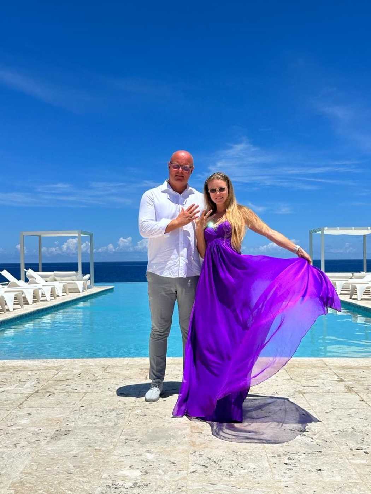
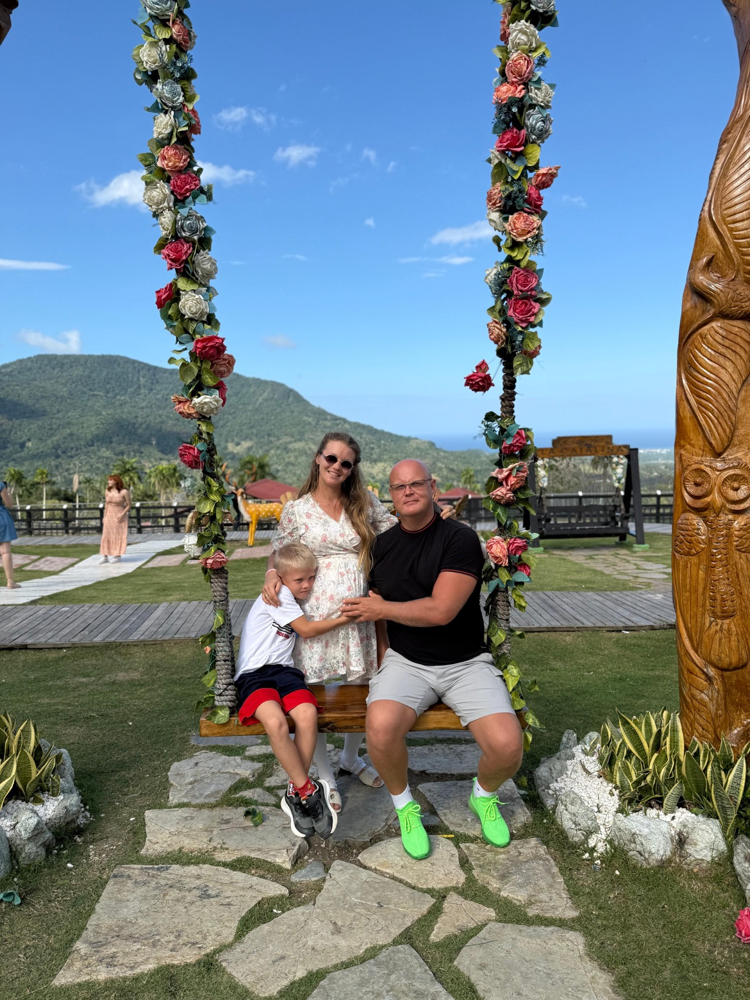
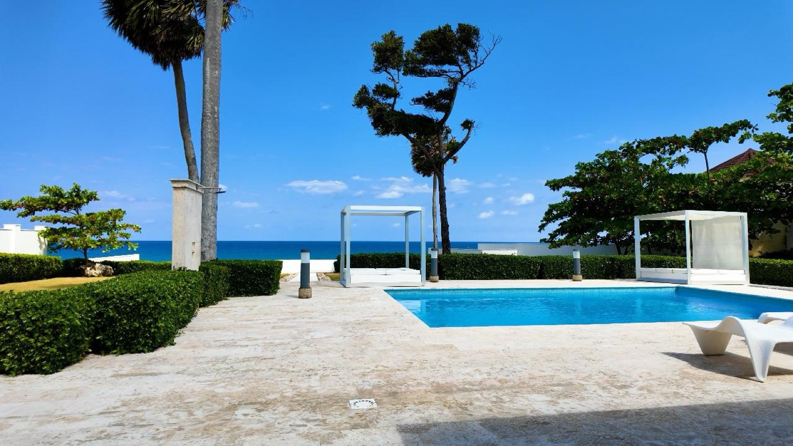

Residency Visa
For clients who want a legal base in the Dominican Republic with a clear document route.
- Eligibility review
- Document checklist
- Application coordination
CaribRus gives clients from the USA, Canada, Europe, Russia and CIS a transparent way to compare residency paths, estimate timing, prepare documents, and move through the process with a team on the ground.
We turn a vague idea of "moving to the Caribbean" into a clear plan: eligibility, documents, timing, family needs, real estate context, and the next legal steps with local professionals.
We identify the most realistic route based on income, family situation, documents, timeline, and whether the goal is relocation, backup status, or eventual citizenship planning.
We coordinate the practical side of preparation, translation, local appointments, filing flow, and communication so the process stays organized.
For clients considering a physical move or property purchase, we connect the residency plan with trusted local market guidance and partner agents.
We help clients understand renewals, family inclusion, lifestyle setup, and questions to discuss with independent legal and tax advisors.
Each client path is packaged around the outcome, while advisory, document preparation, translations, and strategy are handled as part of the coordinated process.
For clients who want a legal base in the Dominican Republic with a clear document route.
For investors and property buyers who want residency aligned with a serious Dominican Republic plan.
For retirees and pension-income clients considering warmer lifestyle options and longer stays.
For spouses, children, and family members who need a coordinated residency file.
For clients who want a stable long-term position rather than a short tactical move.
For clients who want to understand the long-term pathway and plan responsibly from day one.
Clients do not need another generic immigration menu. They need to understand which path fits their income, family, investment plans, timeline, and long-term goal.
| Program | Best For | Typical Focus | Planning Notes |
|---|---|---|---|
| Residency VisaGeneral route | Families, remote professionals, entrepreneurs | Clear residency file, document readiness, local coordination | Good starting point when the client needs a practical second base. |
| Investor ResidencyCapital and real estate route | Property buyers, investors, business owners | Investment context, real estate timing, local partner flow | Best reviewed before committing to a property or capital plan. |
| Pensioner ResidencyRetirement route | Retirees and pension-income clients | Income proof, family planning, lifestyle setup | Strong fit for Canadian, US, and European retirement scenarios. |
| Family ResidencyDependents and reunification | Spouses, children, multi-person files | Civil documents, translations, sequencing, appointments | Family documents should be checked early to avoid delays. |
| Permanent ResidencyLong-term route | Clients planning continuity in the Dominican Republic | Renewals, status maintenance, long-term planning | Works best when residency is treated as a multi-year strategy. |
The platform layer makes the service easier to buy: clients see a route, estimated range, document steps, and a future client cabinet instead of guessing what happens next.
This calculator is intentionally conservative. It helps the client understand scale before a proper document review.
Send My EstimateThe concept is simple: no scattered messages, no mystery status, no lost document checklist. The client sees what is ready, what is missing, and what happens next.
Messaging should feel different for each audience. Americans, Canadians, and Europeans often think in terms of lifestyle, mobility, retirement, and optionality. Russian-speaking clients often need a second legal base, family security, and practical relocation support.

For business owners, remote professionals, families, and retirees who want a Caribbean base outside the US system.
For clients exploring warmer lifestyle options, retirement planning, flexible stays, and long-term family mobility.
For mobile professionals, retirees, and families who want a Caribbean residency option outside the European routine.
For families and entrepreneurs who need a practical second jurisdiction, relocation route, and trusted Russian-language guidance.
Every case is different, so we avoid generic promises. The first goal is to understand the client, confirm what is realistic, and build a clean document route.
We clarify the country of residence, family members, income source, urgency, travel plans, and whether real estate is part of the plan.
We review what you already have, identify gaps, and map apostille, legalization, translation, or timing issues before they slow the file.
The residency route, supporting documents, translations, forms, and local appointments are prepared in a clean sequence.
We coordinate filing flow with local professionals, keep next actions visible, and help the client understand what is happening at each step.
Once approved, we help organize the practical handoff, renewal reminders, and what the new status means for the client and family.
For clients relocating or buying property, we connect the residency plan with neighborhoods, real estate partners, schools, and local setup questions.
Until real testimonials are collected and approved, these scenario cards communicate the kinds of clients CaribRus serves without inventing names, faces, or claims.
Needs a second jurisdiction, flexible Caribbean access, and a plan that does not require immediate relocation.
Explores warmer lifestyle, longer stays, property options, and a calm residency process with practical support.

Looks for a second legal base, family safety, document coordination, and a Russian-language guide through the process.
Wants residency questions answered while evaluating Dominican Republic real estate and local living options.
Residency often appears at the exact moment a client starts asking about property, schools, banking, neighborhoods, and whether the Dominican Republic can become more than a vacation destination. CaribRus can support that conversation without replacing the realtor.

These answers are general orientation. Exact requirements, timelines, and legal consequences should be confirmed for each client profile before filing.
It can be suitable for families, entrepreneurs, investors, retirees, remote professionals, and property buyers who want a legal Caribbean base or relocation option.
Not every client is planning immediate relocation. The right strategy depends on the residency category, travel plans, renewal requirements, and long-term goals.
Family inclusion is often part of the planning conversation. We review spouse and child documents early so the file is structured correctly from the beginning.
The category depends on income source, investment plans, family profile, documents, and whether the goal is relocation, backup residency, retirement, or real estate planning.
Real estate can be relevant for some clients, especially investors and buyers planning a long-term Dominican Republic base. The legal fit should be confirmed before purchase decisions.
Retirees and pension-income clients may have a distinct planning route. We review proof of income, documents, family needs, and timing before recommending next steps.
Timing depends on document readiness, translations, local appointments, government processing, and the client profile. We build a realistic sequence after the document review.
Common items may include passports, civil status documents, police clearance, proof of income or investment, photos, medical steps, translations, and legalized or apostilled records.
Many foreign documents require translation and proper formatting. We help clients identify what needs translation and how to sequence it with legalization or apostille steps.
Some documents may need apostille or legalization depending on the issuing country and document type. This is one of the first items checked in document review.
Yes. CaribRus is designed for English and Russian-speaking clients who need practical guidance, clear communication, and support with document flow.
Yes. The positioning for US and Canadian clients often focuses on lifestyle, retirement, mobility, family planning, real estate, and second jurisdiction optionality.
No. Residency planning can affect tax questions, but tax advice should come from a qualified tax professional who understands the client's full situation.
The website provides advisory and coordination information. Specific legal advice and filing decisions should be confirmed with qualified local legal professionals.
Some clients plan with a long-term citizenship route in mind. The pathway depends on eligibility, continuity, legal requirements, and future personal circumstances.
After approval, clients usually need to understand status maintenance, renewals, local practical setup, and future planning around family, property, and travel.
Yes. CaribRus can support agents and agencies by pre-screening buyer leads, explaining residency context, and helping foreign clients move forward confidently.
Yes. Many clients should understand residency options before buying property so their real estate search, timeline, and legal planning work together.
Urgent cases require a fast document audit. We identify blockers first, then decide whether a realistic accelerated sequence exists.
Submit the residency review form with your country, goal, family profile, and timeline. We will respond with the next practical step.
Use the form for a first review. We will respond with the next practical step and, if useful, a short list of documents to prepare before the call.